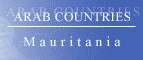
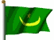

The Country & People of Mauritania
This page contains links to sites in Mauritania and Mauritania related sites.
For Middle East, North Africa, Arab and regional information visit Arab Countries
Hints:
- Use the "FIND" function in the Edit menu of your browser to search the page
- Use translating services in Chrome or Bing Bar in Internet Explorer to view page and/or linked websites in your language
General Info
* Business
* Culture
* Education
* History
* Media
* Organizations
* Travel
* Gateways
* Arab Countries
Mauritania, officially Islamic Republic of Mauritania, republic (2005 est. pop. 3,087,000), 397,953 sq mi (1,030,700 sq km), NW Africa. It is bordered by the Atlantic Ocean (W), Western Sahara (N), Algeria (NE), Mali (E and SE), and Senegal (SW). Nouakchott is the capital. Most of the country is low-lying desert, forming part of the Sahara, but some fertile soil is found in the semiarid Sahel of the southwest, along the Senegal R. The economy is divided between a traditional agriculture sector and a modern mining industry developed in the 1960s. Irrigated crops include millet, dates, rice, and sorghum. Stock raising (cattle, sheep, goats, and camels) was sharply reduced by the great drought of the 1970s and 80s. There is a growing fishing industry, based in the Atlantic, and fish processing is important. Shipments of iron ore account for a large portion of export earnings. Nearly a third of the population are nomadic Moors, of Berber and Arab background; another third are mostly Africans, many of whom live as agriculturalists near the Senegal R.; and the rest are of mixed Moor and African descent. Islam is the state religion; Arabic and Wolof are official languages.
History
Settled by Berbers in the 1st millennium AD, the region was the center of the ancient empire of Ghana (700–1200) and later became part of the empire of Mali (14th–15th cent.). By this time the Sahara had encroached on much of Mauritania, limiting agriculture and reducing the population.
In the 1440s Portuguese navigators established a fishing base, and from the 17th cent. European traders dealt in gum arabic along the southern coast. France gained control of S Mauritania in the mid-19th cent., declared a protectorate over the region in 1903, and made it a separate colony in French West Africa in 1920; however, little was done to develop the economy.
Nationalist political activity began after World War II, and Mauritania gained full independence in 1960.
A Muslim state was created in 1961 under Makhtar Ould Daddah as president. His rule was troubled by ethnic tensions between the Fulani and the Arab-Berber group, by economic problems aggravated by the severe drought in the Sahel, and by worker-student protests.
The military deposed Ould Daddah in 1978, and military governments subsequently ruled the country.
A 1975 agreement with Spain and Morocco giving Mauritania control over the southern third of the Spanish (Western) Sahara ignited a conflict in the former colony. The Polisario Front, a proindependence guerrilla group backed by Algeria, waged war against Mauritanian troops until 1979, when Mauritania renounced its claims to the area and signed a peace treaty with the front. Slavery was only officially abolished in 1980, and racial unrest erupted in the late 1970s and persisted into the 1990s, aggravated by government repression of black Mauritanians.
In 1984 Col. Maouiya Ould Sidi Ahmed Taya became president after a coup.
A new constitution approved in 1991 called for an elected president and national assembly, and the government legalized political parties.
Taya won election as president in 1992 and 1997, in balloting widely considered to be unfair.
In 1993 the United States ended development aid to Mauritania in protest against the country’s oppression of its black citizens and its support of Iraq during the Persian Gulf War; the government subsequently moved toward a pro-Western position.
Taya survived a coup attempt in June, 2003. In the Nov., 2003, presidential elections he received 66.7% of the vote; his nearest challenger, former president Heydalla, almost 19%. Despite new voting safeguards designed to prevent vote-rigging, there were again accusations of fraud. Heydalla was arrested after the election on charges of plotting a coup, which he denied; he received a suspended five-year sentence in December, and as a result of the sentence he lost his political and civil rights for five years.
In Aug. and Sept., 2004, Mauritanian officials said they had foiled two more coup plots. At the same time, locusts ravaged a large portion of the nation’s agricultural land, leading to concerns of a possible food crisis.
In Aug., 2005, while President Taya was abroad, the long-time national security chief, Col. Ely Ould Mohamed Vall led a coup that replaced Taya with a 17-member military council headed by Vall. The coup was quickly denounced by the African Union, United States, and others, but after the council promised to hold democratic legislative elections within two years the objections ended. Mauritanians generally greeted the Taya’s overthrow with celebration, and opposition groups with qualified approval.
In 2006 voters approved a new constitution limiting a president to two five-year terms in office. In the legislative elections (Nov.-Dec., 2006) a coalition of former opposition parties won the largest bloc of seats, followed by independents, but no group won a majority.
Senatorial elections were held in Jan., 2007, and in March Sidi Ould Cheikh Abdallahi, a former government minister who ran as an independent but was supported by former government parties and was regarded as the military's candidate, was elected president after a runoff.
In 2008, however, increasing food prices and concerns over the government's overtures to Islamists led to government instability beginning in May and tensions between the president and parliament. In August, after the president dismissed several military and security leaders, one of them, Gen. Mohamed Ould Abdel Aziz, overthrew the president and replaced the presidency with a military-dominated council; a new cabinet was appointed in September. Mauritania saw an increase in Islamic militant attacks in the months following the coup, and fighting between Islamist and government forces continued sporadically into 2010, at times spilling across the border into Mali.
Aziz resigned from the military and the government in Apr., 2009, in order to run for president; Senate President Ba Mamadou Mbare became interim head of state. In June, 2009, a settlement negotiated as a prelude to new elections led to the formation of a power-sharing government that included military- and opposition-appointed members; as part of the agreement Abdallahi appointed the interim government and then officially resigned as president. The presidential election in July resulted in a victory for Aziz, with more than 52% of the vote, but the main opposition candidates rejected the results.
The president was injured in a shooting in Oct., 2012, reportedly accidentally, though some reports suggested it might have been an assassination attempt.
The president's party, Union for the Republic, won a majority of the seats in the legislature in the Nov.–Dec., 2013, elections, with its allies winning additional seats, but all but one of the parties in the 11-party opposition alliance boycotted the vote. The opposition also boycotted the June, 2014, presidential election, in which Aziz was easily reelected.
********
Copyright (c) 2012 Columbia University Press.
Used by permission of Columbia University Press.
General Info
Cities, towns, municipalities, places, flag, maps, useful Information....
Business
Economy, reports, statistics, banks, directories, jobs, investment, promotion....
Culture
General resources, heritage, art, literature, photography, cinema, music, song, dance, cultural, scientific,
environmental, sporting entities & info....
Education
Schools, colleges, academies, universities, polytechnics, institutions, research, resources, projects....
History
Ancient & modern history, human rights, politics & political parties, related sites, articles....
Media
Newspapers, magazines, news, newsletters, news agencies, radio, TV, internet, articles, reports, cartoons....
Organizations
Government, ministries, overseas missions, embassies, corporations, organizations, industrial entities, centers,
public hospitals, institutions, societies, foreign entities....
Travel
Airlines, air, sea & coach charters services, travel, tours, guides, hotels, resorts, inns, hostels, health,
travel tips, weather....
Gateways
Gateways, search engines and directories to country related sites and information....
Arab Countries
Arab World: Middle East, North Africa, Arab and regional information. Resources to other Arab countries....
About Mauritania
General Information Also see Travel
- All Referer
Earth & environment, history, literature & arts, people, places, plants & animals, religion, science & technology, sports & everyday life....
- ArabNet Overview, history, geography, business, culture, government, transport, tour guide, links
- ArabInfo Overview, government, history, links
- Atlapedia Geography, climate, people, demography, religion, education, modern history, currency, other information....
- BBC Country Profile Key facts, figures and dates
- Britannica.Com Country info, land, people, economy, society, government, history, culture, maps, statistics, links....
- CIA World Factbook Map, geography, people, government, economy, communications, transportation, military, issues
- Country Reports Economy, defense, geography, government, people, anthem, map, news, weather, links....
- Encarta OnLine Info, land & resources, population, economy, government, history, other related items, links....
- Encyclopaedia of the Orient Geography, politics, economy, health, education, religion, people, history, anthem, cities....
- Expedia Almanac, fast facts, communications, on business, health & safety, transportation, traveler's directory
- Info Please General info, map, geography, government, history, land & people....
- Nation By Nation Info, government, human rights, news, geography, history, people, links....
- US Library of Congress Everything you ever wanted to know about Mauritania....
- World66 General info, cities, history, people, economy, getting around, getting there, links....
Cities, Towns, Municipalities & Places
- Mairie du Ksar Mayor, action plan, services, photos....
- World Heritage Cities Ancient ksour of Ouadane, Chinguetti, Tichitt and Oualata - Each ksar is encircled by walls that are fairly well-preserved
Flag, Maps, Useful Information....
- Cellular News Cellular coverage map, systems, frequencies....
- Ethnologue Languages
- Flag Description, meaning, history, interesting facts
- Flag Explanation, historical, military & political flags, subdivisions, national emblem....
- World Atlas A brief description, fast facts, flag, landforms, maps, traveller info, weather
- World Clock Local time, sunrise, sunset, GMT offset, daylight saving....
- World Paper Money Paper currency since 1974
General Info
* Business
* Culture
* Education
* History
* Media
* Organizations
* Travel
* Gateways
* Arab Countries
Business and Economy
General, Economy, Reports & Statistics
- Bilateral Relations with Japan Diplomatic, investment, economic cooperation, residents....
- Mauritania and the IMF Position in the fund, reports....
- MBendi Business information, news, industries, events
- Ports Focus Ports, harbours, marinas....
- US Department of Energy Analysis, information, oil, natural gas, coal, electricity....
- US Department of State Country commercial guide 2001 (pdf)
- World Bank
Overview, news & events, data & statistics, publications & reports, development topics, projects & programs, Public Information Center
- World Trade Organization - WTO
Provides trade statistics, goods schedules, services schedules and MFN exemptions, trade policy reviews, dispute cases, and notifications
Banks
- Banque Al-Wafa Mauritanienne Islamique
- Banque Mauritanienne pour le Commerce International
A modern financial institution, performing and resolutely turned towards the future
Directories, Job Opportunities
- Annuaires Afrique - Mauritanie Telephonique Local et Yellow Pages
Investment & Promotion....
General Info
* Business
* Culture
* Education
* History
* Media
* Organizations
* Travel
* Gateways
* Arab Countries
Art, Culture & Sport
General Resources, Heritage....
Art, Literature, Photography, Cinema....
- Internet Movie Database Movie & TV reports
- Guide to Theatres Activity, companies, places, events, festivals....
Music, Song & Dance....
- Dimi Mint Abba Traditional Music
Cultural, Scientific, Environmental, Sporting Entities & Info
- Animal Info Threatened species, environmental and social data
- AquaStat Information on quantity and quality of freshwater and its availability
General Info
* Business
* Culture
* Education
* History
* Media
* Organizations
* Travel
* Gateways
* Arab Countries
Education
Schools, Colleges, Academies, Universities & Polytechnics
- The American International School of Nouakchott To provide an education program similar to that of the US public schools
- University of Nouakchott An academic institution involved in education, training and research
Institutions & Organizations
- Association Culturelle Des Etudiants Mauritaniens
- Kultureller Mauretanischer Verein Deutchland
Association culturelle des Etudiants Mauritaniens en Allemagne
Research, Resources & Projects
General Info
* Business
* Culture
* Education
* History
* Media
* Organizations
* Travel
* Gateways
* Arab Countries
History, Human Right & Politics
Ancient & Modern....
- All Referer Ancient history....
- World Statesmen Flags, chronology, rulers, governors, ministers, commissioners....
Human Rights, Politics & Political Parties....
- Amnesty International News, reports, urgent action. Latest annual report....
- Coalition Against Slavery in Mauritania and Sudan - CASMAS A human rights abolitionist movement
- Mauritanian Human Rights Watch
Al-Marsad - Defending victims of oppression and prisoners of conscience
- US Department of State Country reports on human rights practices
- La Force du Changement
- Rassemblement des Forces Democratiques Opposition party - Unity, democracy, social Justice
Related Sites, Articles....
- Centre Mauritanien d'Analyse de Politiques
- Constitution Background, history & news
General Info
* Business
* Culture
* Education
* History
* Media
* Organizations
* Travel
* Gateways
* Arab Countries
Visit Arab Media for satellite stations & Arab newspapers
Media
Newspapers, Magazines....
- Al-Raya Daily newspaper
OnLine News, Newsletters, News Agencies....
- AllAfrica.Com News plus, news wire....
- l’Agence Mauritanienne d’Information (AMI)
- Sahara Media Updated daily
- Washington Post News & references
Radio, TV, Internet....
Articles, Reports, Cartoons....
General Info
* Business
* Culture
* Education
* History
* Media
* Organizations
* Travel
* Gateways
* Arab Countries
Visit Arab Organizations for Pan-Arab, middle East, North Africa and regional organizations
Government & Organizations....
Government, Ministries, Overseas Missions, Embassies....
- Chiefs of State and Cabinet Members
- Political Leaders Dates and figures of the leadership since 1961 (with pictures)
- Direction of Hydraulics and the Cleansing (DHA)
Information you would need about the situation and the evolution of the drinkable water supply in Mauritania
- Mauritania Official site of the Government of Islamic Republic of Mauritania
- Ministry of Mines and Industry History and economics, organisation and departments, products
- Embassy of Mauritania in Ottawa, Canada Discover Mauritania, economy, tourism, official services
- Embassy of Mauritania in Washington, USA Visa services, The Country, Presidency, Consular, Economy, Travel....
- Permanent Mission of Mauritania to the United Nations
New York - Country facts, statements, basic documents
Corporations, Organizations, Public Hospitals and Industrial Entities
- Cement of Mauritania Complete cement plant....
- Societe Nationale des Industries et des Mines (SNIM) A modern company in the heart of the Sahara desert
- MauriPost
- MauriTel
Centers, Institutions, Societies....
- Agir en Faveur de l'Environnement (AFE)
- L’Association des Jeunes Ressortissants de M’Bagne
- L'association SOS-Abbere To initiate and implement projects, economic and social development....
Foreign Entities
- French Embassy
- US Embassy
Embassy news, U.S. citizen services, Visas to the U.S, U.S. policy & Iissues, resources
- Program of the United Nations for Development (UNDP) Reinforcement in term of plea and mobilization of the resources
- United Nations in Mauritania Current events, coordination, education of the girls, documentation and information center....
- World Food Programme Fight against global hunger....
- World Health Organization Tobacco & health, socio-economic situation
General Info
* Business
* Culture
* Education
* History
* Media
* Organizations
* Travel
* Gateways
* Arab Countries
Travel & Tourism
Airlines, Air, Sea & Coach Charters Services
- Mauritania Airways
Travel, Tours, Guides.... More country info
- Chinguitty Voyages Tour Operator for organizing trips and vacations in Mauritania
- Tour in Mauritania Share customs and traditions, camp in the desert, exploring oases, mountains and the desert
- Adventures of Mauritania Getting there & costs, safety & health, visa, climate, cities, holidays....
- Africa Guide Introduction, visitor info, accommodation, tours....
- Lonely Planet Travel information, maps, photos, background historical and cultural information
- Travel Guide General & travel info, money, duty free, health, accommodation, visas....
- World Travel Guide Travel information, regions & places....
Hotels, Resorts, Inns, Hostels....
Health & Travel Tips
- Foreign & Commonwealth Office Travel information, country advise, latest travel updates....
- Travel Document Systems Passports, visas, travel documents
- US Consular Information Warning, visa, security, health, crime/drug penalties....
Weather....
- Tide Calendar Tide times, sunset, sunrise and global position
- Weather Underground Temperature, humidity, pressure and conditions by city
- Yahoo Weather By city. Forcast, sunrise, sunset, humidity, wind, dewpoint....
General Info
* Business
* Culture
* Education
* History
* Media
* Organizations
* Travel
* Gateways
* Arab Countries
Visit Arab Gateways for Arab and other country links
Gateways to Mauritania
General Info
* Business
* Culture
* Education
* History
* Media
* Organizations
* Travel
* Gateways
* Arab Countries
Please link to this page.
https://www.hejleh.com/countries/mauritania.html
For comments, reports of deadlinks and adding your URL
Names, pictures and logos are the copyright of their respective owners.
(C)Copyright 1998-2024 Mazen Hejleh. All rights reserved.